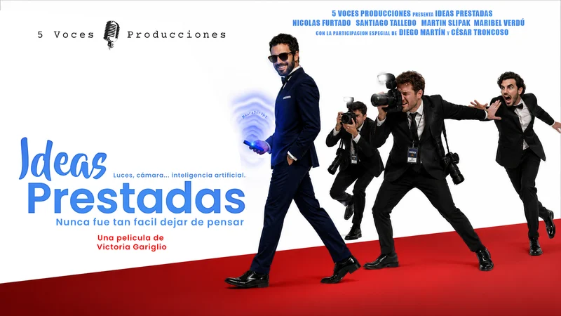
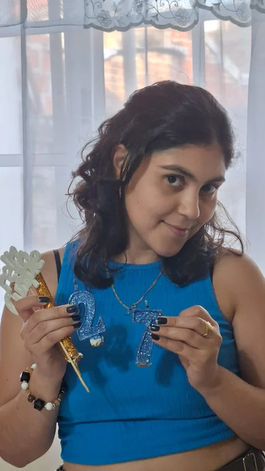
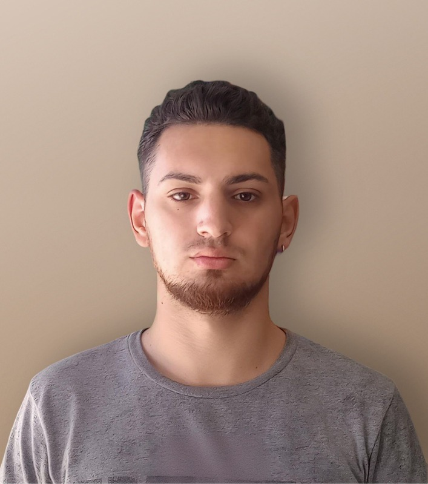
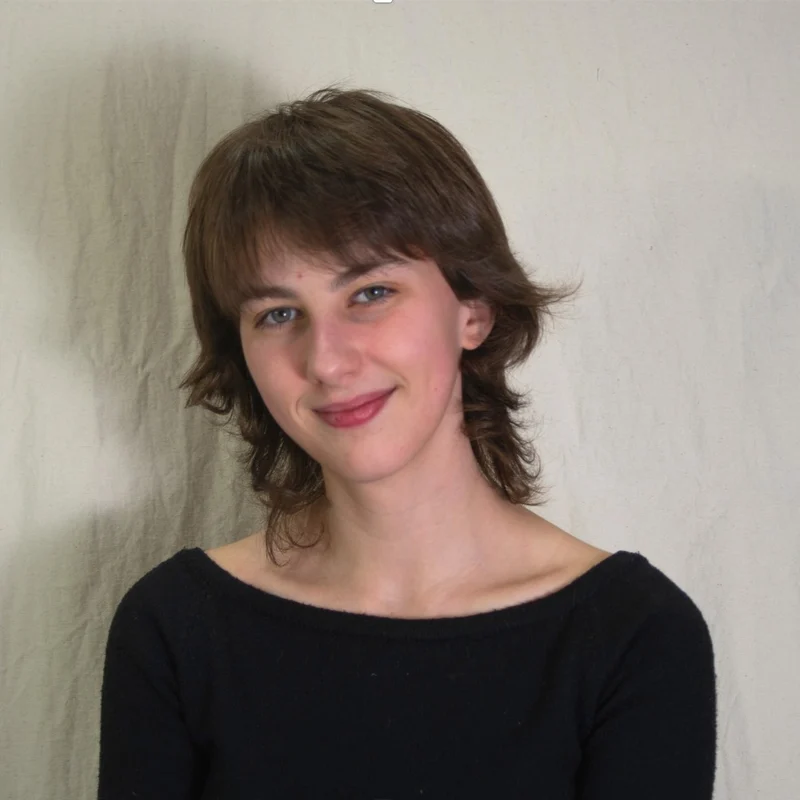
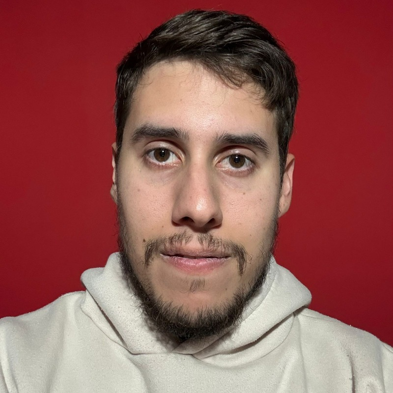
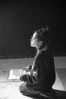

Ideas Prestadas

Marcos (34), un frustrado actor que sueña con triunfar como guionista, encuentra una innovadora IA llamada NeuraScript que lo lleva a la fama y lo acerca a ser invitado al programa de Freddy Castelli. Para ello Intenta concretar una película junto a una excéntrica actriz, pero enfrenta los constantes sabotajes de su ex amigo Ángel (34), un actor rival. En el programa, cuando su secreto sale poco a poco a la luz, siente culpa y asume su mentira. Marcos pierde todo lo que había conseguido, y comprende que lo que de verdad necesitaba siempre estuvo en el humilde teatro donde comenzó.

Estudia Diseño de imagen y sonido en la UBA. Participó de varios cortometrajes independientes que han sido parte de festivales regionales y ha participado en el Fin de Semana Sangriento del Festival Buenos Aires Rojo Sangre.

Estudia Diseño de Imagen y Sonido en la UBA. Se desempeñó como asistente de dirección en un corto documental y directora en pequeños trabajos facultativos. Le apasiona crear historias conectadas a la realidad en la que vivimos.

Alumna avanzada de Diseño de Imagen y Sonido en la UBA, con experiencia en dirección, fotografía, montaje y dirección de arte en cortometrajes seleccionados para proyecciones académicas.

Estudia Diseño de Imagen y Sonido en la UBA. Cuenta con un amplio recorrido en el Diseño 3D y Freelancer como Camarografo para eventos.

Estudia Diseño de imagen y sonido en la UBA. Participó de varios video clips y cortos universitarios.